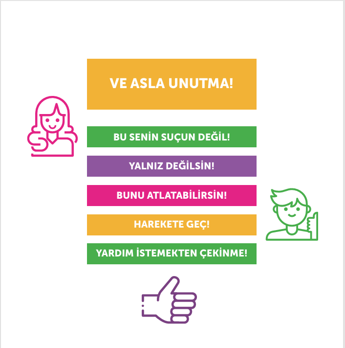

SİBER ZORBALIK NASIL HİSSETTİRİR?
Zorbalık davranışı büyük bir psikolojik şiddettir ve bu davranışa maruz kalan kişiyi incitebilir; suçluluk, utanç, üzüntü, öfke, değersizlik gibi kötü duygulara sebep olabilir. Zorbalık, yaşaması ve baş etmesi zor bir durumdur.
- Korku ve üzüntüyle nasıl başa çıkacağını bilemeyebilirsin.
- Yetişkinlerin olumsuz tepkisinden, daha fazla dışlanmaktan, ispiyoncu olarak anılmaktan ya da daha büyük zorbalıklardan korktuğun için susmak isteyebilirsin.
- İştahın azalabilir, canın hiçbir şey yemek istemeyebilir,
- Bu durumdan utanabilir hatta kendi hatan olduğunu düşünebilirsin.
- Kendini üzgün, yalnız, endişeli, korkmuş, mutsuz ve suçlu hissedebilirsin.
- Bazen geceleri kâbuslar görebilirsin.
- Kimsenin sana yardımcı olmayacağını ya da bu zorbalık davranışının hiç bitmeyeceğini düşünebilirsin.
- Çevrene olan güvenin azalabilir, “her an başıma bir şey gelebilir, çevrimiçi ortamda görüştüğüm her kişi bana zarar verebilir” gibi düşünceler katlanması zor bir hal alabilir.
Siber zorbalığa maruz kalanların böyle düşünmeleri ve hissetmeleri oldukça normaldir.
Eğer maruz kaldığın davranış sana böyle hissettiriyorsa, siber zorbalığa maruz kalıyor olabilirsin.
Bunun için büyüklerinden ve arkadaşlarından destek istemeye çekinme. Çevrende böyle hisseden arkadaşların ve sevdiklerin varsa onlara destek ol.
